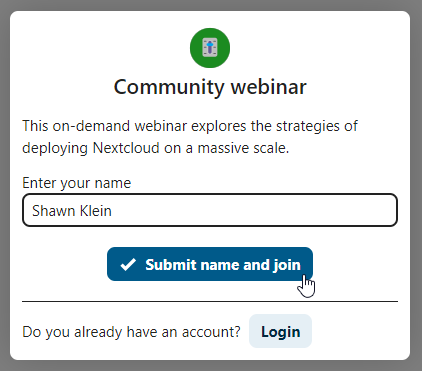
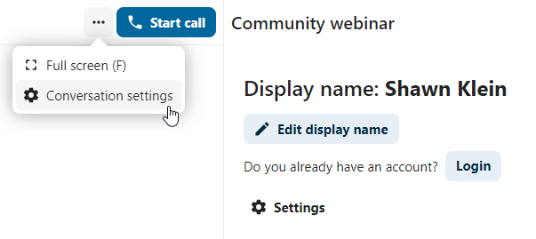

Glac páirt i nglao nó i gcomhrá mar aoi
Má fuair tú nasc chuig comhrá Nextcloud Talk, is féidir leat páirt a ghlacadh mar aoi gan cuntas Nextcloud.
Ag dul isteach i gcomhrá
Má fuair tú nasc chuig comhrá, is féidir leat é a oscailt i do bhrabhsálaí chun páirt a ghlacadh sa chomhrá. Iarrfar ort d’ainm a iontráil anseo sula dtéann tú isteach.
{kind=link}

You can also change your name later by clicking the Edit button in the top bar.

Is féidir socruithe do cheamara agus do mhicreafóin a fháil sa roghchlár Socruithe. Is féidir leat liosta aicearraí is féidir leat a úsáid a fháil ansin freisin.

Ag dul isteach i nglao
Is féidir leat glao a thosú am ar bith leis an gcnaipe Tosaigh glao. Gheobhaidh rannpháirtithe eile fógra agus is féidir leo páirt a ghlacadh sa ghlao. Má tá glao tosaithe ag duine eile cheana féin, athróidh an cnaipe go cnaipe glas Glac páirt sa ghlao.

Sula dtéann tú isteach, feicfidh tú seiceáil gléis inar féidir leat do cheamara agus do mhicreafón a roghnú, doiléiriú cúlra a chumasú, nó páirt a ghlacadh gan aon ghléasanna.

Le linn glao, is féidir leat socruithe an Cheamara agus an Mhicreafóin a fháil sa roghchlár ... sa bharra uachtarach.

During a call, you can mute your microphone and disable your video with the mute and camera toggle buttons in the call toolbar, or using the shortcuts M to mute audio and V to disable video. You can also use the space bar to toggle mute. When you are muted, pressing space will unmute you so you can speak until you let go of the space bar. If you are unmuted, pressing space will mute you until you let go.
Is féidir leat do fhíseán a cheilt (úsáideach le linn comhroinnt scáileáin) leis an tsaighead bheag díreach os cionn an tsrutha físe. Tabhair ar ais é leis an tsaighead bheag arís.
Lánscáileán agus socruithe eile
Sa roghchlár comhrá is féidir leat rogha a dhéanamh dul lán-scáileáin. Is féidir leat é seo a dhéanamh freisin trí úsáid a bhaint as an eochair F ar do mhéarchlár. Sna socruithe comhrá, is féidir leat roghanna fógra agus cur síos iomlán an chomhrá a fháil.
{kind=link}

Ag páirt a ghlacadh mar aoi ríomhphoist
Is féidir cuireadh a thabhairt d’aoi chuig comhrá trí ríomhphost. Tá nasc sa ríomhphost chun páirt a ghlacadh sa chomhrá. Má chliceálann an t-aoi ar an nasc, atreorófar chuig an gcomhrá iad le comhartha rochtana aonair.

Is féidir cuireadh a dhéanamh tríd an seoladh ríomhphoist a chur isteach sa réimse cuardaigh faoin táb Rannpháirtithe.

Is féidir leat cuireadh mórchóir a thabhairt do rannpháirtithe ríomhphoist trí chomhad CSV a uaslódáil. Tá an rogha ar fáil sna socruithe comhrá faoin rannán "Cruinniú".